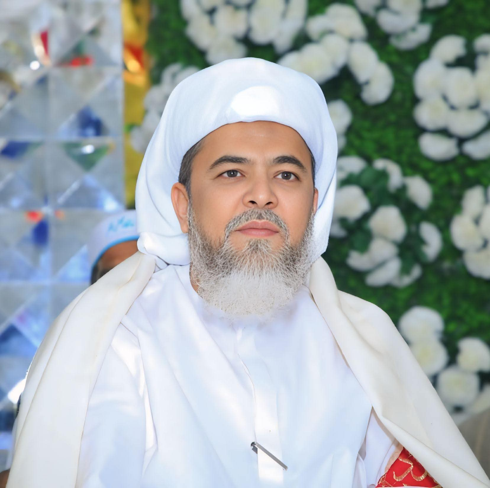

✦

Abusalar Peer Syed Shah
Shahzad Zafar Qadri
Jamati Sherazi Sb
سجادہ نشین : آستانہ عالیہ غوثیہ قادریہ جماعتیہ شیرازیہ ڈیرہ پیر سید ظفر احمد شاہ صاحب رحمت اللہ علیہ بھکھی شریف شیخوپورہ
(خانقاہ گلشن ظفر )
Scan QR Code
abusalar-peer-syed-shah-shanza.vercel.app